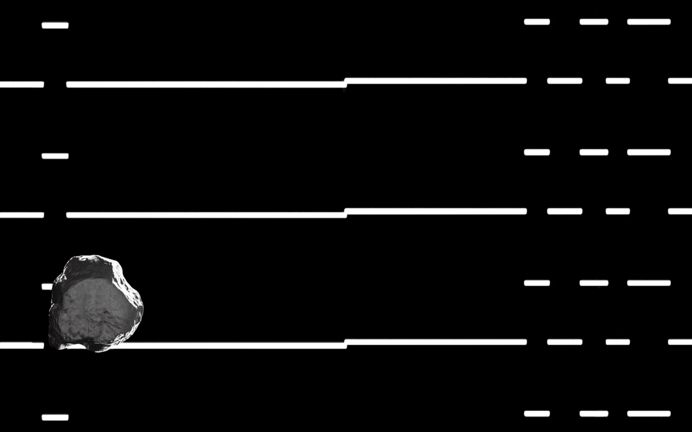
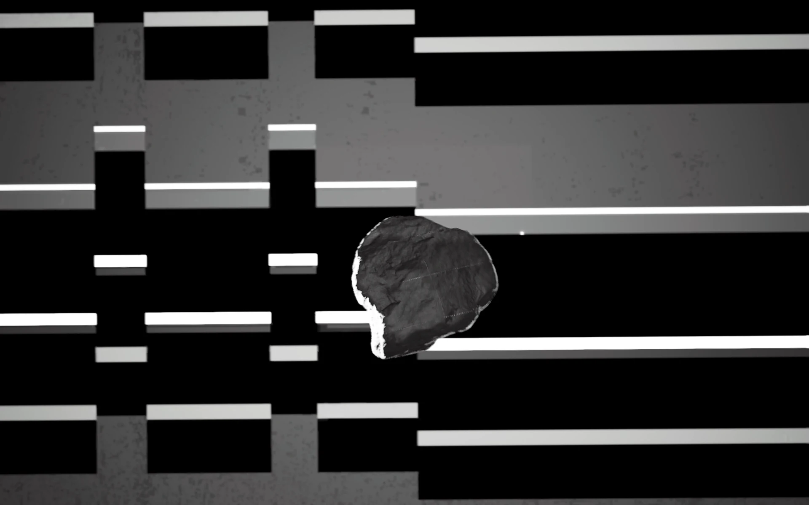
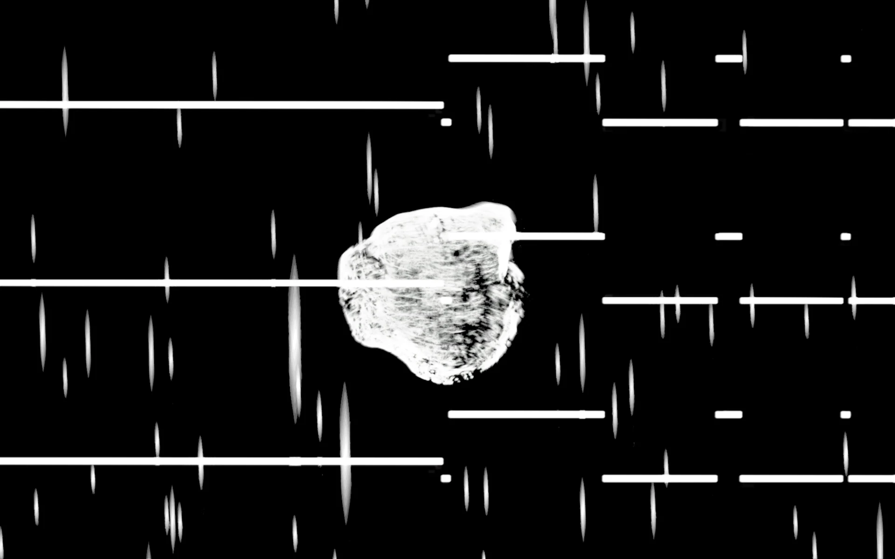
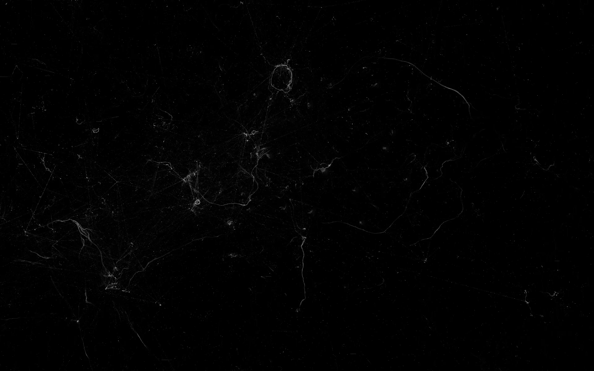
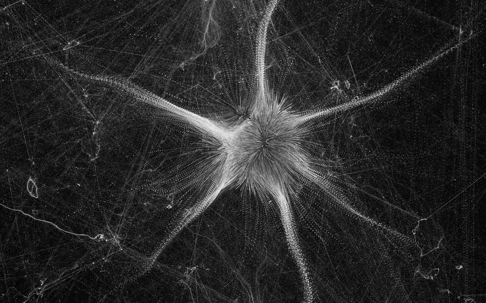
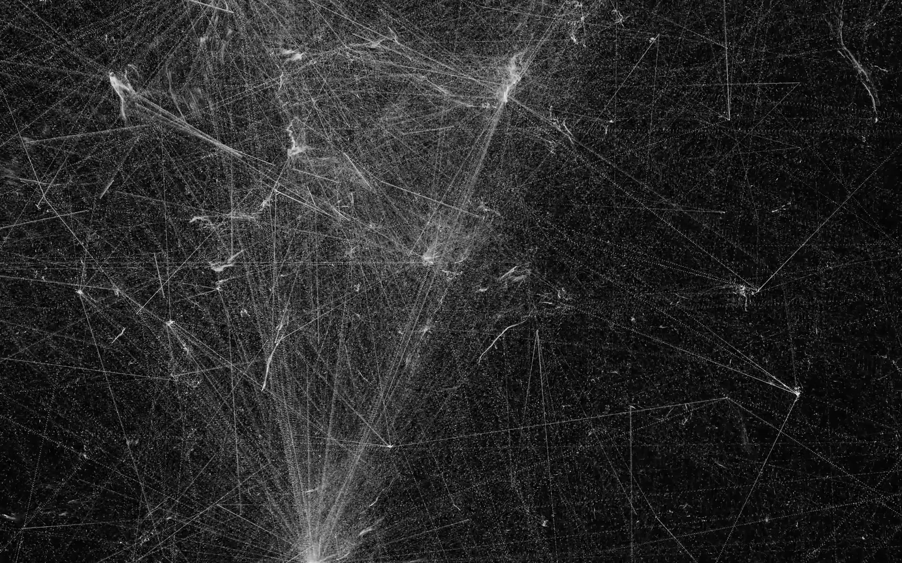
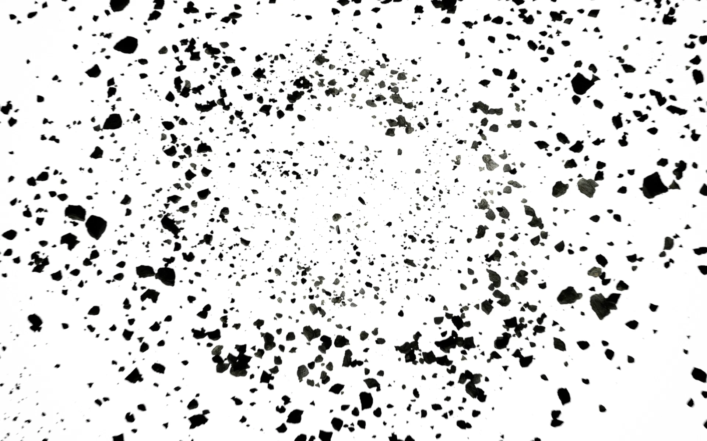
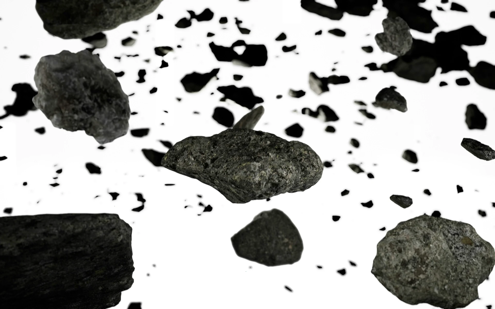
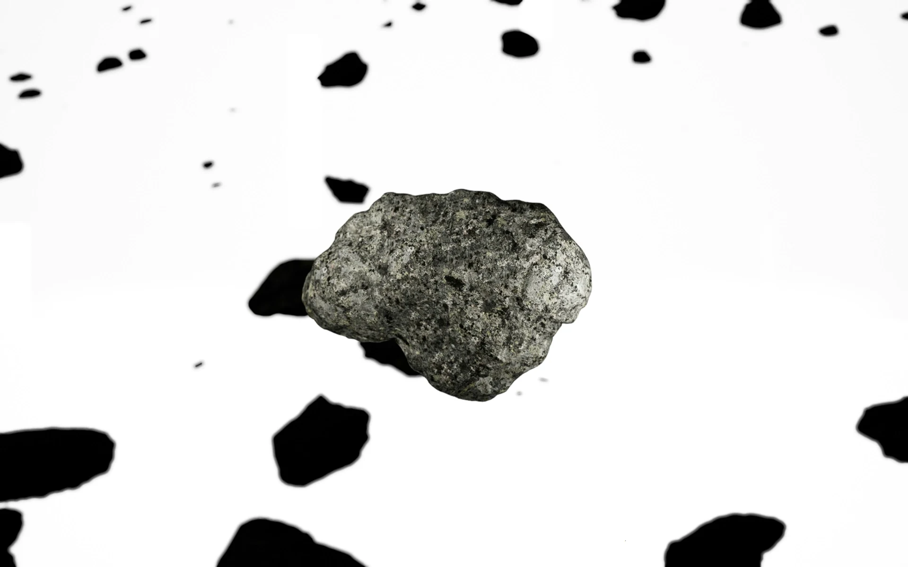

《Sense collection : Momentum》
2024
Director : Yukyung Chung
Sound : Jungmin Yoo, Sungjin Shin
Audio : Dongjin Park
3D Animation : Heonsoo Choo, Inmo Sung
Design: Juhee Kim
Installation: Lala Sound
Platform-L Machine Room, Seoul
《sense collection : momentum》 (2023)은 사운드와 비주얼, 기술과 예술의 경계에서 출발한 전시형 프로젝트다.
프로듀서, 사운드 엔지니어, 기획자, 3D 애니메이터로 구성된 팀이 모여, 음악과 시각예술의 접점을 탐구하고자 했다.
단순한 미디어 아트가 아니라, 관객이 감각적으로 참여할 수 있는 경험 공간을 구축하는 것을 목표로 했다.
작품에서 모든 움직임과 변형은 이동(migration)으로 정의된다. 스스로 움직일 수 없는 개체가 외부 힘에 의해 이동할 때, 그 상황은 뒤집히며 새로운 관계가 형성된다.
이동은 곧 출발과 도착을 수반하며, 시작된 순간부터 시간과 공간은 이전과 이후로 나뉜다. 심지어 같은 자리에 머물러 있어도, 시간의 흐름은 그것을 또 다른 이동으로 만든다.
결과적으로, 작품 속 공간은 출발과 도착 사이의 중간 지대, 하나의 경유지로 기능한다. 관객은 시각적 요소와 사운드를 함께 경험하며, 예술과 상업, 정적과 동적의 교차점에 놓인 감각적 전환을 체험한다.









←